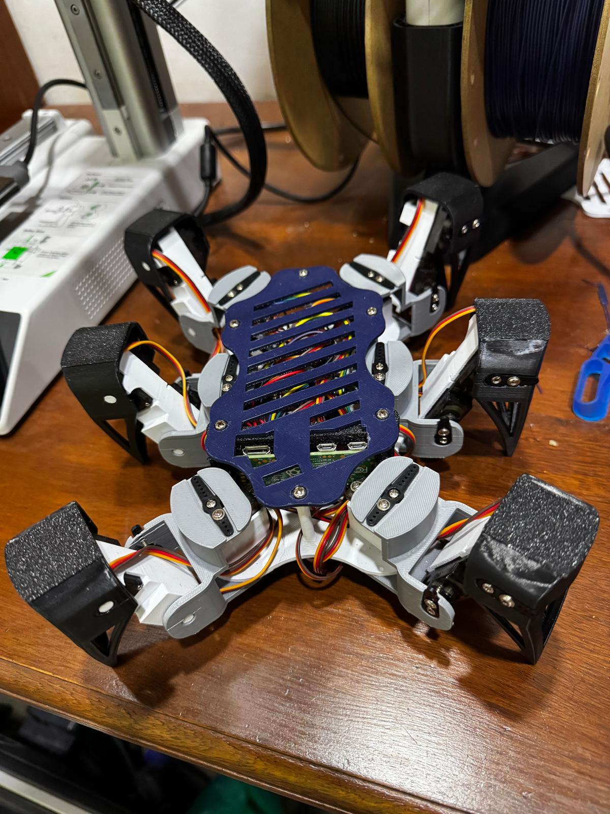

Raspberry Pi Hexapod Robot
18-servo walking robot with 3D-printed structure, Raspberry Pi/PCA9685 control, and inverse kinematics.

Overview
This personal project is a Raspberry Pi-based hexapod robot built around 18 servos, custom structural parts, and walking algorithms.
My Role
I designed and 3D printed the structural components in SolidWorks, integrated the servo control hardware, and coded inverse kinematic walking algorithms.
Technologies Used
- SolidWorks-designed and 3D-printed structural components.
- 18 servos controlled with Raspberry Pi and PCA9685.
- Inverse kinematic walking algorithms.
Challenges
The core challenge was coordinating many servo joints into stable walking motion through kinematics and control timing.
Results / Current Status
The project produced a functioning hexapod platform for walking algorithm development and embedded robotics practice.
Media
Additional robot motion media, design diagrams, or control notes will be added as the project page develops.